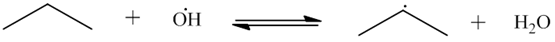
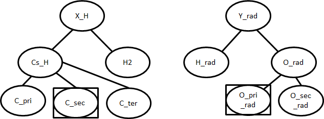
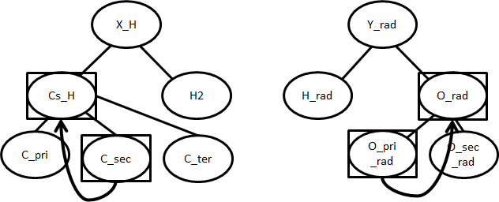

14. Kinetics Estimation¶
This section gives in-depth descriptions of algorithms used for determining kinetic parameters. For general usage of the kinetic database see Kinetics Database.
14.1. Priority of Kinetic Databases¶
When multiple sources are available for kinetic parameters, the following priority is followed:
- Seed mechanisms (based on listed order in input.py)
- Reaction libraries (based on listed order in input.py)
- Matched training set reactions
- Exact template matches from rules or matched training groups (based on rank)
- Estimated averaged rules
In the case where multiple rules or training set reactions fall under the same template node, we use a user-defined rank to determine the priority of kinetic parameters
| Rank | Example methods |
|---|---|
| Rank 1 | Experiment |
| Rank 2 | High level calculation: CCSD(T)-F12, MS-Tor, 2d rotors |
| Rank 3 | Mid level calculation: CBS-QB3, 1-d rotors |
| Rank 4 | Low level calculation: no rotor treatment |
| Rank 5 | User’s estimates without supporting methods |
| Rank 10 | Averaged value from child nodes’ rate rules |
| Rank 0 | Untrusted method and never used in generation |
The rank of 0 is assigned to kinetics that are generally default values for top level nodes that we have little faith in. It is never used in generation and its value will in fact be overriden by averages of its child nodes, which generates an averaged rate rule with rank 10.
Only non-zero rules are used in generation. A rank of 1 is assigned to the most trustworthy kinetics, while a rank of 10 is considered very poor (ie. averaged kinetics). Thus, a rate rule of rank 3 will be given priority over a rate rule of rank 5.
14.2. Kinetic Families¶
To show the algorithm used by kinetic families, the following H-abstraction will be used an example
First the reacting atoms will be identified. Then, the family`s trees will be descended as far as possible to give the reaction`s groups.
Using the sample tree shown above, the desired template is (C_sec, O_pri_rad). The algorithm will then search the database for parameters for the template. If they are present, an exact match will be returned using the kinetics of that template. Note that an exact match refers to the nodes (C_sec, O_pri_rad) and not the molecules (propane, OH).
There may not be an entry for (C_sec, O_pri_rad) in the database. In that case, the rule will attempt to “fall up” to more general nodes:
Now the preferred rule is (Cs_H, O_rad). If database contains parameters for this, those will be returned as an estimated match.
If there is still no kinetics for the template, the entire set of children for Cs_H and O_rad will be checked. For this example, this set would include every combination of {C_pri, C_sec, C_ter} with {O_pri_rad, O_sec_rad}. If any these templates have kinetics, an average of their parameters will be returned as an estimated match. The average for \(A\) is a geometric mean, while the average for \(n\), \(E_a\), and \(\alpha\) are arithmetic means.
If there are still no “sibling” kinetics, then the groups will continue to fall up to more and more general nodes. In the worst case, the root nodes may be used.
A Full List of the Kinetics Families in RMG is available.